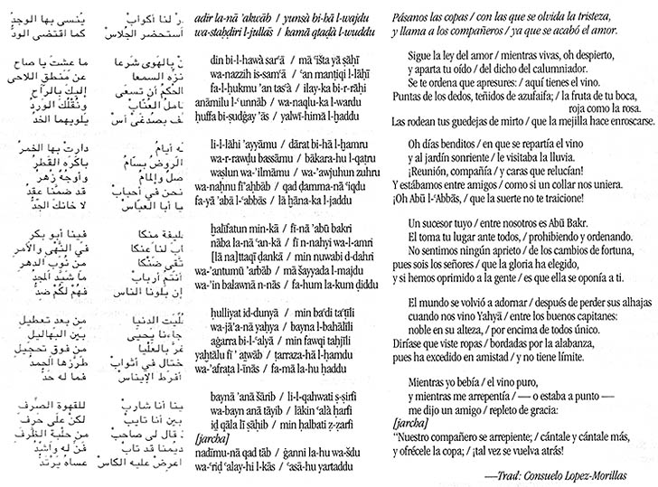

Grabación: muwaššah
(Haz clic en el enlace para escuchar la grabación)
Ibn Baqi (?) (m. c. 1150): "Adir la-na 'akwah" ("Pásanos las copas")
Esta grabación recoge una versión cantada de una muwaššah del siglo XII que ha sobrevivido en la tradición oral del norte de África. No conservamos transcripciones de música árabe medieval, por lo que no se puede saber cómo se interpretaba esta canción entonces. La melodía que se utiliza en la grabación se recopiló en el siglo XX en Marruecos y, dado el conservadurismo en la enseñanza de la música para textos clásicos como éste, es posible que esta melodía sea muy antigua, pero, claro está, no se puede saber si realmente corresponde a la música original del poema cuando se compuso en el siglo XII. Es un poema de tema amoroso que, entre otras cosas, celebra el buen vino, cuyo consumo, aunque técnicamente prohibido por el Islam, era una costumbre entre los musulmanes de la Península Ibérica. Abajo, una transcripción del poema en caracteres árabes y romanos, con la traducción. A continuación, hay una transcripción de la melodía. (Para ir directamente a la melodía, haz clic aquí.) La grabación es muy larga; por eso aquí sólo se incluye un breve fragmento: la primera estrofa y el comienzo de la segunda. La canción completa dura más de 20 minutos. Su kharja (o jarcha) está en árabe coloquial, no mozárabe. |
 |
(Grabación original: Altramar, intérpretes. Iberian Garden, CD2. Dorian Discovery, 1998.)